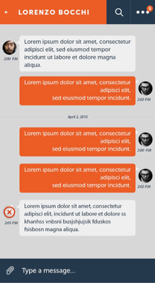
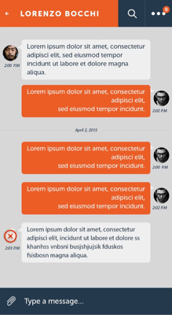

Layout and bubbles
In this Android tutorial series I will build chat layout.
Including chat bubbles , list items , separators and search functionality.

Let's start with the layout:
code
In this Android tutorial series I will build chat layout.
Including chat bubbles , list items , separators and search functionality.

Let's start with the layout:
code